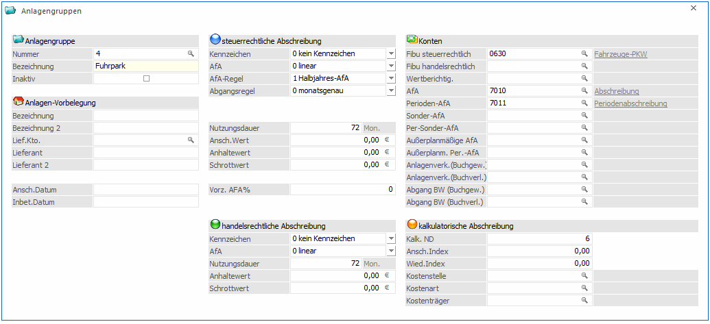

Unter Anlagengruppen versteht man die Zusammenfassung von Anlagegütern gleicher Kategorien in Gruppen. Durch die Vorbelegung in einer Anlagengruppe stehen häufig vorkommende Stammdaten (FIBU-Konto, AfA-Konto, AfA- und Abgangsregeln, Kennzeichen, usw.) sofort bei der Anlage im Anlagenstamm zur Verfügung.
Beispiele für Anlagegruppen
Bürotische, Sessel, Hocker etc. werden zu der Anlagengruppe Büromöbel zusammengefasst.
PCs, Drucker etc. werden zur Anlagengruppe Hardware zusammengefasst.
Um die Anlagegruppen anlegen zu können wählen Sie den Menüpunkt
1 Stammdaten
1 Anlagengruppen
Dieser Programmpunkt kann auch mit der Tastenkombination
1 STRG + G
aufgerufen werden.

Anlagengruppe
Ø Nummer
max. 20stellig, alphanumerisch
Eingabe der Anlagennummer, die artgleiche Inventurgegenstände zu einer Gruppe zusammenfasst, z.B. Nummer 1 für Büroeinrichtung (Schreibtische, Sessel etc.).
Ø Bezeichnung
max. 40-stellig, alphanumerisch
Eingabe der Bezeichnung der Anlagengruppe, z. B. Grundstücke, Büroeinrichtung etc.
Ø Inaktiv
Wenn ein Datensatz auf Inaktiv gesetzt wird, hat das vorerst nur die Auswirkung, dass er nicht mehr im Matchcode angezeigt wird. Durch einen Reorg kann dieser Datensatz aus der Datenbank entfernt werden. Voraussetzung dafür ist, dass für den Datensatz keine Bewegungsdaten (Buchungen etc.) vorhanden sind. Nähere Informationen zum Reorganisieren entnehmen Sie bitte dem WinLine START-Handbuch.
Anlagen Vorbelegung
Folgende Felder können über die Anlagengruppe bei Anlage eines neuen Inventargutes automatisch vorgelegt werden:
Ø Bezeichnung
Inventar-Bezeichnung, 2x 40 Zeichen
Ø Lief. Konto
Kontonummer des Lieferanten, von dem das Anlagegut bezogen wurde.
Ø Lieferant
2x40 Zeichen Beschreibung zum Lieferanten
Ø Ansch.Datum
Eingabe des Anschaffungsdatums.
Ø Inbet.Datum
Eingabe des Datums der Inbetriebnahme, welches vor allem für die Halbjahresregelung in der Berechnung der AfA relevant ist.
Konten
Ø FIBU steuerrechtlich
max. 20-stellig, alphanumerisch
Eingabe des FIBU-Kontos, auf welchem die Anlage verbucht wurde. Dadurch wird der Zusammenhang zwischen ANBU und FIBU hergestellt.
Ist im Anlagenparameter die steuerrechtliche Buchungsübergabe hinterlegt, wird das steuerrechtliche FIBU-Konto für die Buchungsübergabe in die FIBU bei der Perioden-/Jahresabschreibung und beim Anlagenverkauf herangezogen.
Auch bei diversen Auswertungen wird dieses Konto herangezogen, wenn die Auswertung nach FIBU-Konto mit den steuerrechtlichen Werten ausgegeben wird.
Ø FIBU handelsrechtlich
max. 20-stellig, alphanumerisch
Eingabe des FIBU-Kontos, auf welchem die Anlage verbucht wurde. Dadurch wird der Zusammenhang zwischen ANBU und FIBU hergestellt.
Ist im Anlagenparameter die handelsrechtliche Buchungsübergabe hinterlegt, wird das handelsrechtliche FIBU-Konto für die Buchungsübergabe in die FIBU bei der Perioden-/Jahresabschreibung und beim Anlagenverkauf herangezogen.
Auch bei diversen Auswertungen wird dieses Konto herangezogen, wenn die Auswertung nach FIBU-Konto mit den handelsrechtlichen Werten ausgegeben wird.
Ø Wertberichtigungskonto
Wurde in den Anlagenparametern aktiviert, dass die (Perioden-)Abschreibung auf ein Wertberichtigungskonto verbucht werden soll, muss beim Wirtschaftsgut ein Wertberichtigungskonto hinterlegt werden.
Ø AfA-Konto
AfA-Konto aus der Finanzbuchhaltung, wird für die Bildung des AfA-Buchungssatzes herangezogen.
Ø Perioden-AfA-Konto
Perioden-AfA-Konto aus der Finanzbuchhaltung, wird für die Bildung des AfA-Buchungssatzes herangezogen.
Ø Sonder-AfA-Konto
Sonder-AfA-Konto aus der Finanzbuchhaltung, wird für die Bildung des AfA-Buchungssatzes herangezogen.
Ø Per.Sonder-AfA-Konto
Periodisches Sonder-AfA-Konto aus der Finanzbuchhaltung, wird für die Bildung des AfA-Buchungssatzes herangezogen.
Ø Außerplanmäßige AfA-Konto
Außerplanmäßige-AfA-Konto aus der Finanzbuchhaltung, wird für die Bildung des AfA-Buchungssatzes herangezogen
Ø Außerplanm. Per.-AfA-Konto
Außerplanmäßige-Perioden-AfA-Konto aus der Finanzbuchhaltung, wird für die Bildung des AfA-Buchungssatzes herangezogen.
Ø Anlagenverk. (Buchgew.)
max. 20stellig, alphanumerisch
Eingabe des Erlöskontos, das beim Anlagenverkauf für die Buchung in der FIBU herangezogen wird, wenn durch den Anlagenverkauf ein Buchgewinn entsteht. Das Konto muss ein Steuerkennzeichen und einen Steuersatz hinterlegt haben, damit bei der Übergabe der Erlösbuchung des Anlagenverkaufs in die FIBU auch die entsprechende Umsatzsteuer berechnet wird
Wenn im Anlagenstamm hier kein Konto eingetragen ist, wird beim Anlagenverkauf das entsprechende Konto aus dem Anlagenparameter herangezogen oder es muss im Anlagenverkauf manuell eingetragen werden.
Ø Anlagenverk. (Buchverl.)
max. 20stellig, alphanumerisch
Eingabe des Erlöskontos, das beim Anlagenverkauf für die Buchung in der FIBU herangezogen wird, wenn durch den Anlagenverkauf ein Buchverlust entsteht. Das Konto muss ein Steuerkennzeichen und einen Steuersatz hinterlegt haben, damit bei der Übergabe der Erlösbuchung des Anlagenverkaufs in die FIBU auch die entsprechende Umsatzsteuer berechnet wird
Wenn im Anlagenstamm hier kein Konto eingetragen ist, wird beim Anlagenverkauf das entsprechende Konto aus dem Anlagenparameter herangezogen oder es muss im Anlagenverkauf manuell eingetragen werden.
Beispiel
Anlagenverk. (Buchgew.) = Konto Erlöse aus Anlagenverkäufen 20 % USt. (bei Buchgewinn)
Anlagenverk. (Buchverl.) = Konto Erlöse aus Anlagenverkäufen 20 % USt. (bei Buchverlust)
Ø Abgang BW (Buchgew.)
max. 20stellig, alphanumerisch
Eingabe des Sachkontos, das beim Anlagenverkauf für die Ausbuchung des Restbuchwertes in der FIBU herangezogen wird, wenn durch den Anlagenverkauf ein Buchgewinn entsteht. Wenn im Anlagenstamm hier kein Konto eingetragen ist, wird beim Anlagenverkauf das entsprechende Konto aus dem Anlagenparameter herangezogen oder es muss im Anlagenverkauf manuell eingetragen werden.
Ø Abgang BW (Buchverl.)
max. 20stellig, alphanumerisch
Eingabe des Erlöskontos, das beim Anlagenverkauf für die Ausbuchung des Restbuchwertes in der FIBU herangezogen wird, wenn durch den Anlagenverkauf ein Buchverlust entsteht. Wenn im Anlagenstamm hier kein Konto eingetragen ist, wird beim Anlagenverkauf das entsprechende Konto aus dem Anlagenparameter herangezogen oder es muss im Anlagenverkauf manuell eingetragen werden.
steuerrechtliche Abschreibung
Ø Kennzeichen
Durch Anklicken des Pfeils neben dem Eingabefeld werden die hier gültigen Eingabemöglichkeiten aufgelistet:
ü 0
Kein Kennzeichen, d.h. ein
normales Anlagegut, bei dem es sich weder um ein geringwertiges Wirtschaftsgut,
noch um eine Finanzanlage handelt.
ü 1
Finanzanlage (z.B.
Wertpapiere - werden nach speziellen Richtlinien bewertet).
Bei diesem
Kennzeichen wird keine AfA gerechnet, auch wenn eine Nutzungsdauer, das
Inbetriebnahmedatum und eine AfA-Art (linear, degressiv oder Staffel-AfA)
eingetragen ist.
ü 2
GWG Sofortabschreibung, d.h.
das geringwertige Anlagegut kann schon im Jahr der Anschaffung mit seinem
gesamten Anschaffungswert abgeschrieben werden (GWG = Anschaffungswert unter EUR
400,- netto - Stand: Juli 2003).
In Deutschland ist die Sofortabschreibung
nur bis 31.12.2007 gültig für GWGs mit Anschaffungswert bis EUR 410,-. Ab dem
01.01.2008 muss die Poolabschreibung für GWGs genutzt werden.
ü 3
Liegenschaften (z. B.
Grundstücke und Gebäude) - steuert die Behandlung des Anlagegutes in Bezug auf
den Einheitswert.
Liegenschaften werden wie Anlagegüter mit Kennzeichen 0
abgeschrieben. Sobald eine Nutzungsdauer hinterlegt ist, nimmt das Anlagegut
auch an der Abschreibung teil. Wenn keine Abschreibung für eine Liegenschaft
vorgenommen werden soll, muss die AfA "keine AfA" hinterlegt werden bei
eingetragener Nutzungsdauer.
ü 4
Poolabschreibung (gültig nur
für Deutschland)
Dieses Kennzeichen wird für die GWGs benötigt, die in
Deutschland ab 01.01.2008 angeschafft werden. Für diese GWGs ist ein
Sammelposten zu bilden, der über 5 Jahre mit 20 % abgeschrieben wird. Der
Sammelposten bleibt auch beim Ausscheiden eines GWGs innerhalb der 5 Jahre
unberührt.
Anlagen mit diesem Kennzeichen werden im Prinzip abgeschrieben wie
mit Kennzeichen 0. Es wird eine Nutzungsdauer von 5 Jahren, lineare Abschreibung
und Ganzjahres-AfA vorgeschlagen. Die Besonderheit ist die Behandlung der
Abgänge. Diese haben nur in der handelsrechtlichen Abschreibung eine Auswirkung.
Steuerrechtlich dürfen diese Anlagen erst nach fünf Jahren ausscheiden. Deshalb
wird im Anlagenverzeichnis und im Anlagenspiegel bei Anlagen mit
Poolabschreibung ein Abgang innerhalb der ersten vier Jahre unterdrückt und erst
im fünften Jahr ausgegeben. In den Entwicklungszeilen ändert sich nichts, dort
wird der tatsächliche Abgang ausgewiesen.
ü 5
Zuschüsse für die Darstellung
von Sonderposten oder Zuschüssen
Ein Sonderposten / Zuschuss wird im
Anlagenstamm als Subanlage mit negativem Vorzeichen erfasst. Für die Subanlage
wird ein eigenes FIBU-Konto (z.B. Sonderposten mit Rücklagenanteil) und
AfA-Konto (Ertragskonto) hinterlegt Die FIBU-Buchung der Periodenabschreibung /
Jahresabschreibung erfolgt für diese Anlage mit einem negativen Betrag à AfA-Konto an FIBU-Konto = Ertragskonto
an Sonderposten mit Rücklagenanteil.
Ø AfA
Durch Anklicken des Pfeils neben dem Eingabefeld werden die hier gültigen Eingabemöglichkeiten aufgelistet:
ü 0 linear
ü 1 degressiv
ü 2 Staffel-AfA
ü 3 keine AfA
Ø AfA-Regel
Wählen Sie aus der Combobox die jeweils gültige Abschreibungsregel für das Anlageverzeichnis aus. Diese Vorbelegung wird ihnen danach bei der Anlage im Anlagestamm automatisch vorgeschlagen.

ü 0
Monatsgenau, d.h. die
Abschreibung kann auf Grund des Datums der Inbetriebnahme monatsgenau gerechnet
werden.
ü 1
Halbjahres-AfA, d. h.
aufgrund des Datums der Inbetriebnahme wird geprüft, ob die Anschaffung im
ersten oder zweiten Halbjahr liegt. Wird das Anlagegut im Wirtschaftsjahr mehr
als sechs Monate genutzt, dann wird der gesamte auf ein Jahr entfallende Betrag
abgeschrieben, sonst die Hälfte dieses Betrages.
ü 2
Ganzjahres-AfA, d.h.
unabhängig vom Datum der Inbetriebnahme wird die Abschreibung für ein ganzes
Jahr berechnet.
ü 3
halbe AfA im ersten Jahr,
d.h. im ersten Jahr wird nur die Hälfte des gültigen Abschreibungsprozentsatzes
zur Berechnung der Abschreibung herangezogen.
ü 4
tagesgenau, d.h. die
Abschreibung wird aufgrund des Datums der Inbetriebnahme tagesgenau gerechnet.
Es wird auf die Anzahl der Tage aliquotiert, die das Anlagegut in diesem Jahr im
Betrieb ist.
Ø Abgangsregel
Wählen Sie aus der Combobox die jeweils gültige Abschreibungsregel für das Anlageverzeichnis aus. Diese Vorbelegung wird ihnen danach bei der Anlage im Anlagestamm automatisch vorgeschlagen.
ü 0
Monatsgenau, d.h. bei einem
Abgang oder Teilwert-Abgang wird die anteilige Abgangs-AfA inkl. Abgangsmonat
berechnet.
ü 1
Halbjahres-AfA, d. h. bei
einem Abgang oder Teilwert-Abgang wird je nach Abgangsdatum die halbe oder ganze
Jahres-AfA als Abgangs-AfA abgeschrieben. Liegt der Abgang im ersten Halbjahr,
wird die halbe Jahres-AfA als Abgangs-AfA ausgewiesen und bei einem Abgang im
zweiten Halbjahr die komplette Jahres-AfA.
ü 2
Ganzjahres-AfA, d.h.
unabhängig vom Abgangsdatum wird die komplette Jahres-AfA als Abgangs-AfA
gerechnet.
ü 3
keine AfA, d.h. dass keine
Abschreibung mehr im Jahr des Abganges erfolgt.
ü 4
tagesgenau, d.h. bei einem
Abgang oder Teilwert-Abgang wird die anteilige Abgangs-AfA im Abgangsmonat
tagesgenau bis zum Abgangsdatum gerechnet.
Allgemeines zu den AfA- und Abgangsregeln
Beachten Sie, dass Sie vor der Neuanlage von Wirtschaftsgütern zumindest die AfA- und Abgangsregeln in den Anlageparametern hinterlegen. Diese Funktion steht ebenfalls für die Anlagengruppen zur Verfügung.
Bei Neuanlage eines Wirtschaftsgutes und Abweichungen laut den Hinterlegungen in den Anlageparametern und der ausgewählten Anlagegruppe erhalten Sie vor dem endgültigen Speichern noch folgende Meldung:
Anlagegüter, die mit falschen AfA- und Abgangsregeln im Anlagestamm angelegt wurden, können nicht mehr verändert werden! Dies ist nur durch Löschung des ganzen Anlagegutes und einer Neuanlage möglich.
Ø Nutzungsdauer
max. 3stellig, numerisch
Eingabe der Grundnutzungsdauer des Anlagegutes. Bei der WinLine ANBU ist es auch möglich, die Nutzungsdauer in Monaten anzugeben (siehe "Anlagenparameter").
Ø Ansch.Wert
Dient der Vorbesetzung des Anschaffungswertes.
Ø Anhaltewert
Dient der Vorbelegung des Anhaltewerts, der festlegt, bis zu welchem Restbuchwert die Anlage abgeschrieben wird.
Ø Schrottwert
Der Schrottwert beeinflusst die Abschreibungsbasis. Er wird zur Berechnung der theoretischen Jahres-AfA vom Anschaffungswert abgezogen.
Ø vorz. AfA %
Eingabe des Prozentsatzes.
Für Investitionen in Anlagegüter, die im Jahr 2009 oder 2010 angeschafft oder hergestellt werden, kann durch das Konjunkturbelebungsgesetz 2009 eine vorzeitige AfA in Höhe von 30 % vorgenommen werden.
handelsrechtliche Abschreibung
Ø Kennzeichen
Durch Anklicken des Pfeils neben dem Eingabefeld werden die hier gültigen Eingabemöglichkeiten aufgelistet:
ü 0
Kein Kennzeichen, d.h. ein
normales Anlagegut, bei dem es sich weder um ein geringwertiges Wirtschaftsgut,
noch um eine Finanzanlage handelt.
ü 1
Finanzanlage (z.B.
Wertpapiere - werden nach speziellen Richtlinien bewertet).
Bei diesem
Kennzeichen wird keine AfA gerechnet, auch wenn eine Nutzungsdauer, das
Inbetriebnahmedatum und eine AfA-Art (linear, degressiv oder Staffel-AfA)
eingetragen ist.
ü 2
GWG Sofortabschreibung, d.h.
das geringwertige Anlagegut kann schon im Jahr der Anschaffung mit seinem
gesamten Anschaffungswert abgeschrieben werden (GWG = Anschaffungswert unter EUR
400,- netto - Stand: Juli 2003).
In Deutschland war die Sofortabschreibung
nur bis 31.12.2007 gültig gewesen für GWGs mit Anschaffungswert bis EUR 410,-.
Seit dem 01.01.2008 muss die Poolabschreibung für GWGs genutzt werden.
ü 3
Liegenschaften (z. B.
Grundstücke und Gebäude) - steuert die Behandlung des Anlagegutes in Bezug auf
den Einheitswert.
Liegenschaften werden wie Anlagegüter mit Kennzeichen 0
abgeschrieben. Sobald eine Nutzungsdauer hinterlegt ist, nimmt das Anlagegut
auch an der Abschreibung teil. Wenn keine Abschreibung für eine Liegenschaft
vorgenommen werden soll, muss die AfA "keine AfA" hinterlegt werden bei
eingetragener Nutzungsdauer.
ü 4
Poolabschreibung (gültig nur
für Deutschland)
Dieses Kennzeichen wird für die GWGs benötigt, die in
Deutschland seit dem 01.01.2008 angeschafft wurden. Für diese GWGs ist ein
Sammelposten zu bilden, der über 5 Jahre mit 20 % abgeschrieben wird. Der
Sammelposten bleibt auch beim Ausscheiden eines GWGs innerhalb der 5 Jahre
unberührt.
Anlagen mit diesem Kennzeichen werden im Prinzip abgeschrieben wie
mit Kennzeichen 0. Es wird eine Nutzungsdauer von 5 Jahren, lineare Abschreibung
und Ganzjahres-AfA vorgeschlagen. Die Besonderheit ist die Behandlung der
Abgänge. Diese haben nur in der handelsrechtlichen Abschreibung eine Auswirkung.
Steuerrechtlich dürfen diese Anlagen erst nach fünf Jahren ausscheiden. Deshalb
wird im Anlagenverzeichnis und im Anlagenspiegel bei Anlagen mit
Poolabschreibung ein Abgang innerhalb der ersten vier Jahre unterdrückt und erst
im fünften Jahr ausgegeben. In den Entwicklungszeilen ändert sich nichts, dort
wird der tatsächliche Abgang ausgewiesen.
ü 5
Zuschüsse für die Darstellung
von Sonderposten oder Zuschüssen
Ein Sonderposten / Zuschuss wird im
Anlagenstamm als Subanlage mit negativem Vorzeichen erfasst. Für die Subanlage
wird ein eigenes FIBU-Konto (z.B. Sonderposten mit Rücklagenanteil) und
AfA-Konto (Ertragskonto) hinterlegt Die FIBU-Buchung der Periodenabschreibung /
Jahresabschreibung erfolgt für diese Anlage mit einem negativen Betrag à AfA-Konto an FIBU-Konto = Ertragskonto
an Sonderposten mit Rücklagenanteil.
Ø AfA
Durch Anklicken des Pfeils neben dem Eingabefeld werden die hier gültigen Eingabemöglichkeiten aufgelistet:
ü 0 linear
ü 1 degressiv
ü 2 Staffel-AfA
ü 3 keine AfA
Ø Nutzungsdauer
max. 3stellig, numerisch
Eingabe der Grundnutzungsdauer des Anlagegutes. Bei der WinLine ANBU ist es auch möglich, die Nutzungsdauer in Monaten anzugeben (siehe "Anlagenparameter").
Ø Anhaltewert
Dient der Vorbelegung des Anhaltewerts, der festlegt, bis zu welchem Restbuchwert die Anlage abgeschrieben wird.
Ø Schrottwert
Der Schrottwert beeinflusst die Abschreibungsbasis. Er wird zur Berechnung der theoretischen Jahres-AfA vom Anschaffungswert abgezogen.
kalkulatorische Abschreibung
Ø kalk. ND
max. 20stellig, numerisch
Eingabe der kalkulatorischen Grundnutzungsdauer. Diese Nutzungsdauer kann sich von der steuerrechtlichen Nutzungsdauer unterscheiden, vorgeschlagen wird jedoch die finanzbuchhalterische ND. Falls es eine tatsächliche kalkulatorische Nutzungsdauer gibt, geben Sie diese ein, ansonsten bestätigen Sie die vorgeschlagene Nutzungsdauer mit ENTER.
Ø Ansch.-Index
Index zum Zeitpunkt der Anschaffung eines Anlagegutes. Der Index ist max. 3-stellig, numerisch. Die richtige Bewertung des Anlagegutes (Basis der kalkulatorischen AfA ist für die Kostenrechnung der Wiederbeschaffungswert, nicht der Anschaffungswert) wird durch den Wiederbeschaffungsindex erreicht, mit dessen Hilfe der kalkulatorische Anschaffungswert (=steuerrechtl. Anschaffungswert berichtigt zum Anschaffungsindex) entsprechend auf- oder abgewertet wird.
Ø Wied.-Index
max. 3-stellig, numerisch
Eingabe des Indexes zum Zeitpunkt der Wiederbeschaffung.
Ø Kostenstelle
max. 20stellig, alphanumerisch
Eingabe der Kostenstelle
Die Kostenstelle beeinflusst zwei wesentliche Programmteile:
ü Bei der kalk. AfA können die Buchungen direkt in die Kostenrechnung übergeben werden.
ü Die Sortierungen der Auswertungen kann man nach Kostenstellen vornehmen (z.B. Anlagenverzeichnis).
Ø Kostenart
max. 20stellig, alphanumerisch
Eingabe der Kostenart.
Ø Kostenträger
Wurde im Feld „Kostenart“ eine Einzelkostenart eingetragen, kann hier ein Kostenträger als Vorbelegung eingetragen werden. Diese Eingabe eines Kostenträgers ist aber nicht verpflichtend.
Der Menüpunkt
1 Anlagengruppen
wird auch automatisch aus dem Fenster
1 Anlagenstamm
aufgerufen, wenn beim Anlegen eines neuen Inventargegenstandes eine Anlagengruppe eingegeben wird, die noch nicht existiert.
Buttons
Ø OK
Durch Drücken des OK-Buttons wird die neue Anlagengruppe gespeichert.
Ø Ende
Mit Ende verlassen Sie den Bildschirm, ohne die Eingaben zu speichern (wenn Sie zuvor nicht Ok gedrückt haben).
Ø Löschen
Mit dem Löschen-Button kann eine bereits vorhandene Anlagengruppe gelöscht werden.